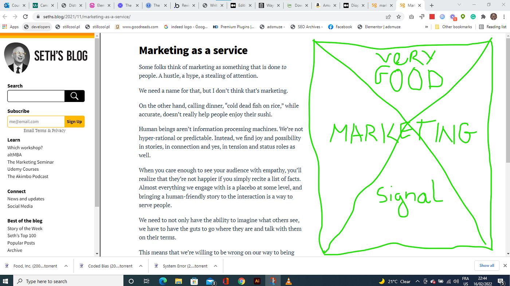
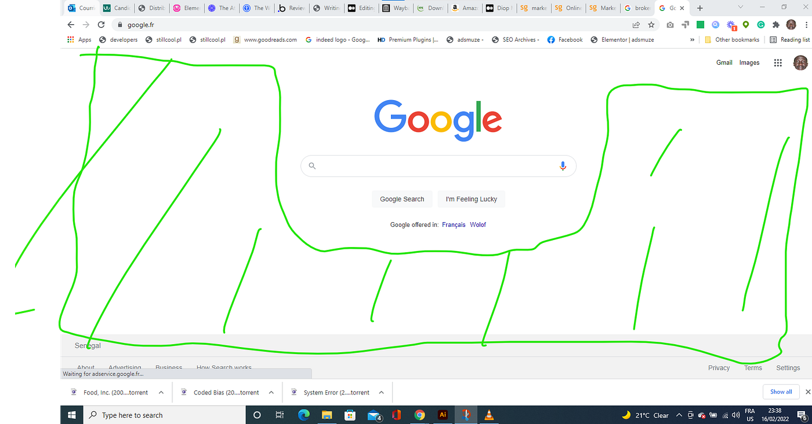
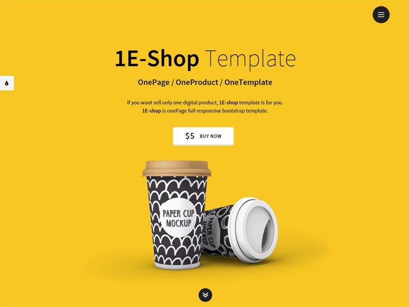
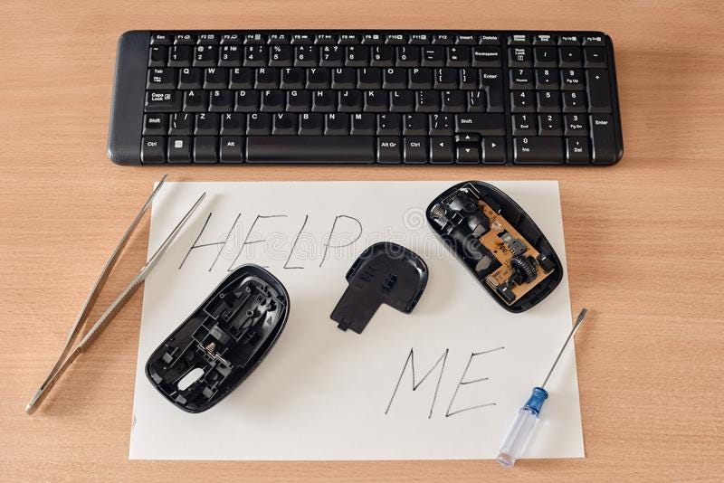

Feb 17
Marketing with People Not at Them
As the owner of an eCommerce marketplace, you should market with the merchants and the consumers. You should give them the tools and power to spread the word around the world because by doing this you will benefit from the network effects and both you, your partners and customers will win in this scheme of marketing with people not at people.
The e-commerce entrepreneur aspiring to run a fast-growing or the fastest business could be tempted to make its e-commerce platform available everywhere I mean both on mobile PC and tablet but is this the best way to start an e-commerce business model0. I think that not every kind of e-commerce business, to keep myself for saying every e-commerce business simply, has to be started being available on all kinds of devices because I am stuck about this idea that personal computer users and mobile users aren't the same. But my opinion may not have a value attached to it but computer users are a way better set of people to start with when it’s about launching a new internet-based business that I used to call tech-enabled businesses but a tech-enabled business is not always internet-based.
Computer users are more valuable to the e-commerce entrepreneur because most of the early adopters are PC users while the mass market of consumers is mostly mobile users. The mobile-first mantra that many tech entrepreneurs and VC investors are selling is for me not always a true assumption to not say not true simply. Targeting computer users first is a better way to start an internet-driven venture, startup, or company if the entrepreneur is willing to exploit the practices and theories that we got from studying the science of the network effect. Then Why?
Because simply of the amount of space in terms of screen size that you have for communicating with your target customer base. I hope that you are not thinking about using this extra space for filling in more products and content but for sending a good marketing signal.
here is how this blog article displayed on desktop

excuse me for bring up google but it’s for you to have more clues.

This large empty space is a signal for computer users like you and me because we know that this space could be filled with ads and other affiliate content and growth hacking pop-ups things but it is there empty and tell us that the owner of this don't care about interruption marketing that he is not there for simply selling us things. This is a clear and very good permission marketing signal that would be more complicated to send to the audience if the display size were smaller like on mobile devices. You may see that the example that I have given is not an e-commerce platform but the lesson is that many e-commerce entrepreneurs and their technical teams would not sleep without finding a way to fill this screen with the more product that they can while maybe putting just one products could land to a very successful e-commerce experience and marketing signal.
What is most interesting is that this signal increases the level of trust of people engaging with your eCommerce platform because it means that you are not hustling to sell us things that they we may not need but highlighting us possibilities by offering a tiny set of choices represented by a few set of products displayed one a large size screen. why not only one product at all?

The technical outcome of a web page displayed in large screen with many animated gifs, colors and boxed is that it makes the visitors confused and inactif during a bit of time that increases the duration of the visit and go know what benefits this provide in terms of SEO and Advertising earnings. But even doing interuption marketing you could send such kind trust signals because we know that when we enter a website letting us download something that we normally should buy the website owner doesn't bother putting a system that open a new window everytime you click on the download button because he knows that you will try many tentatives to get this file or this software promised to be free. Even in such kind of website a marketing signal could be sent because using this kind of service makes you know in what website you are at 3 clicks away from the thing you want to get. Some of this kind of website makes you click 3 times before the getting the file to download other are simply making your mouse broke.

Marketing with people is this simple hard thing that is discussing and sharing with people without caring about the amount of time and money you spend doing it and the profits you get in return but helping them see and get what they are looking for. This is about Ecommerce not search engine but I thought that this is the unique power of Google Search because once there you know that this empty input field and its parent page ask you nothing else other than putting the thing you are looking for for Google to suggest you a set of choices and possibilities that was set to 10 per page but the advertising models came along with some interesting contents enrichment and suggestion boxes features enabled by the very technological progress we have made. As an e-commerce entrepreneur I want you to see and consider search engine as an e-commerce platform because real search engines users are exchanging ideas and interests and sharing them with others by filling keywords and picking the suggested results then why not market with these real search engine users.
Don’t take that is given to you seems to be at the ground level of these ideas and this is more true when it’s about the customers of your e-commerce startups but if you are really launching or operating an e-commerce platform then good luck with amazon and alibaba but if you are specic about who your e-commerce platform is for then I can bet that may the David and goliath story could replicate. But whatever your trajectory is market with people not at them meaning sending them disruptive ads and showing them things they don't want and need.
Real marketing is the most important thing that those you want to serve are asking you that’s why it is important for you e-commerce entrepreneur to adopt marketing as service.